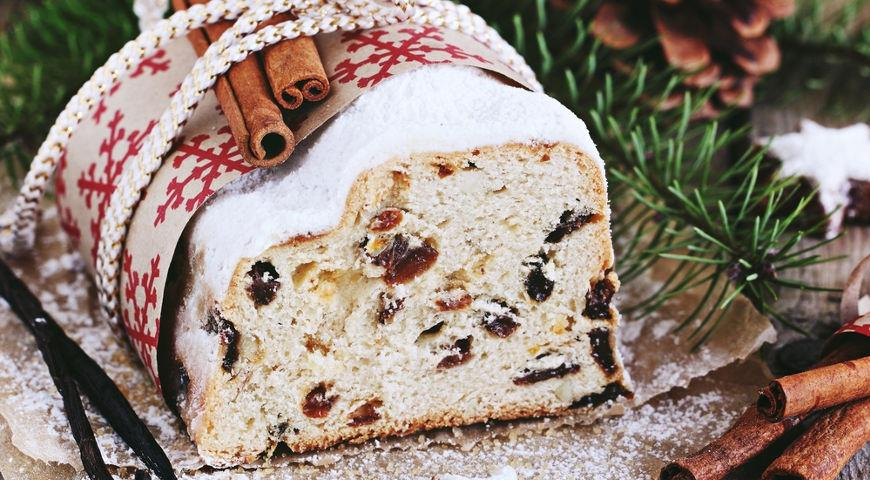

В мировом параде рождественской выпечки штоллен представляет Германию.
Считается, что продолговатая форма и белоснежная от сахарной пудры поверхность штоллена символизируют спеленутого новорожденного младенца Христа.
Родиной штоллена - Дрезден, там его пекут к Рождеству с 1474 года. Только 150 пекарен в городе имеют право на выпечку дрезденского штоллена.
Чаще всего штоллен пекут из дрожжевого теста, насыщенного сдобой и сухофруктами. Популярны также творожные штоллены, их пекут без добавления дрожжей.
Вяленая черная смородина, цукаты из лимонных и апельсиновых корочек, орехи и изюм, смешанные с кардамоном, корицей,
гвоздикой и мускатным орехом придают штоллену характерный для рождественской выпечки аромат и вкус. Неплохо перед выпечкой замочить сухофрукты в роме или бренди.
В Австрии в штоллен часто добавляют вяленую вишню, сушеные абрикосы и ананасы.
Как и другая рождественская выпечка, штоллен прекрасно хранится, легко перевозится и прекрасно переносит заморозку.
ИНГРЕДИЕНТЫ
- мука пшеничная – 2 3/4 стакана
- смесь любых орехов (миндаль, фундук, кедровые, грецкие, макадамия, кешью) – 2 стакана
- смесь цукатов из цитрусовых – большая горсть
- темный изюм – большая горсть
- масло сливочное – 120 г
- свежие яичные желтки – 6 шт.
- дрожжи сухие – 15 г
- молоко – 1/2 стакана
- масло сливочное для смазывания
- коричневый сахар демерара – 3 ст. л.
- ром темный или ликер (Куантро) – 1/2 стакана
- цедра 1/2 лимона – 1 лимон
- сахар – 1 ч. л.
- ваниль – половина стручка
- мука для присыпки
- соль – 1 ч. л.
Для покрытия:
- масло сливочное – 100 г
- ваниль – 1/2 стручка
- пудра сахарная – 1/2 стакана

ПОШАГОВЫЙ РЕЦЕПТ ПРИГОТОВЛЕНИЯ
Шаг 1
Положите изюм, цукаты и смесь орехов в неметаллическую миску, залейте ромом и оставьте на 4–6 ч. Затем откиньте на дуршлаг, обсушите (жидкость от замачивания больше не понадобится) и обваляйте в муке, чтобы кусочки не слипались.
Шаг 2
Для теста в глубокой миске молоко смешайте с обычным сахаром, всыпьте дрожжи и 5 ст. л. просеянной муки; вымесите опару до однородности. Накройте пленкой и оставьте в теплом месте на 20 мин.
Шаг 3
Лимонную цедру измельчите. Ванильный стручок разрежьте вдоль, выскребите семена и смешайте с размягченным маслом. Добавьте в опару оставшуюся муку, коричневый сахар, ванильное масло и желтки; вымесите гладкое тесто. Добавьте подготовленную смесь цукатов, фруктов и орехов, цедру и соль. Вымесите на посыпанной мукой рабочей поверхности. Положите тесто в глубокую миску, накройте полотенцем и поставьте в теплое место на 2 ч.
Шаг 4
Поднявшееся тесто раскатайте в форме овала. Ребром ладони сделайте продольное углубление посередине овала и загните правую половину теста на левую так, чтобы оно чуть заходило за середину. Выложите кекс на противень, покрытый смазанным маслом пергаментом, накройте полотенцем и оставьте в теплом месте на 1 ч.
Шаг 5
Выпекайте штоллен в разогретой до 170–180 °С духовке до готовности, около 1 ч. Через 40 мин. можно накрыть его фольгой, чтобы не подгорел. Деревянная палочка, воткнутая в кекс, должна выходить сухой.
Шаг 6
Масло для покрытия растопите. Ванильный стручок разрежьте вдоль, выскребите семена и добавьте в масло, перемешайте. Смажьте горячий штоллен, только что вынутый из духовки, 1/4 масла, затем посыпьте через мелкое ситечко 1/4 сахарной пудры. Подождите, пока образуется корочка, и повторите еще 3 раза с оставшимся маслом и пудрой.